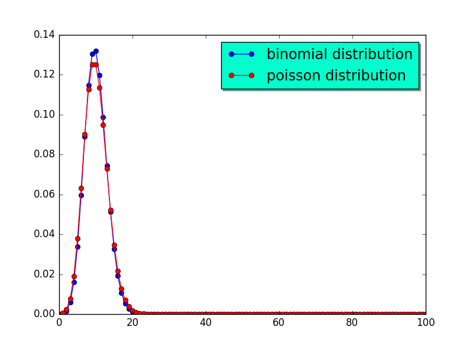
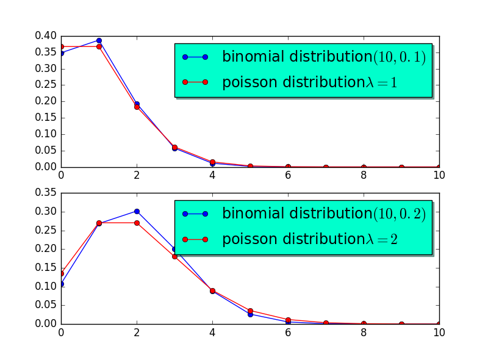

泊松分布
1 定义
在 二项分布 一文中，我们介绍了二项分布的定义和性质。在本文中，我们给出泊松分布，并分析泊松分布和二项分布之间的联系。
如果一个取值于\(0,1,2,\ldots \)的随机变量对某一个\(\lambda\)，其分布如下：
\begin{equation} \label{eq:1} p(i) = P\{X=i\} = e^{-\lambda}\frac{\lambda^{i}}{i!}, i = 0,1,2,\ldots \end{equation}则称该随机变量未服从参数\(\lambda\)的泊松随机变量。
显然：
\begin{equation} \label{eq:2} \sum_{i=0}^{\infty}p(i) = \sum_{i=0}^{\infty} e^{-\lambda}\frac{\lambda^{i}}{i!} = 1 \end{equation}2 泊松分布与二项分布之间的关系
泊松分布在各个领域都有广泛应用，这是由于当\(n\)足够大，\(p\)充分小，\(np\)保持适当的大小时，参数为\((n,p)\)的二项随机变量可以近似的看做参数为\(\lambda = np\)的泊松随机变量。
假设\(X\)是一个服从参数为\((n,p)\)的二项随机变量，并记\(\lambda = np\)，那么：
\begin{eqnarray} \label{eq:3} P\{X=i\}&=& \binom{n}{i} p^{i}(1-p)^{n-i} \\ &=& \frac{ n! }{(n-i)!i!}(\frac{\lambda}{n})^{i}(1-\frac{\lambda}{n})^{n-i} \\ &=& \frac{n(n-1)\ldots (n-i+1)}{n^{i}} \frac{\lambda^{i}}{i!} \frac{ (1-\lambda/n)^{n} }{ (1- \lambda/n)^{i} } \end{eqnarray}当\(n\to \infty\)时，观察上式：
\begin{eqnarray} \label{eq:4} e^{-\lambda}&\approx& (1-\lambda/n)^{n} \\ 1&\approx& \frac{n(n-1)\ldots (n-i+1)}{n^{i}} \\ 1 &\approx& (1-\frac{\lambda}{n})^{i} \end{eqnarray}因此有：
\begin{equation} \label{eq:5} P\{ X=i\} \approx e^{-\lambda} \frac{\lambda^{i}}{i!} \end{equation}独立重复\(n\)次试验，每次成功的概率为\(p\)，当\(n\)充分大，而\(p\)足够小，使得\(np\)保持适当的话，那么成功的次数近似的服从参数为\(\lambda = np\)的泊松分布，这个\(\lambda\)值通常凭经验确定。
以下的例子大都服从泊松分布：
- 一本书里一页或若干页中印刷错误的数量；
- 某地区居民活到100岁的人数；
- 一天中拨错电话号码的次数；
- 一家便利店里每天卖出狗粮饼干的盒数；
- 某一天进入一个邮局的顾客数；
3 泊松分布的期望和方差
回忆在上一章节中我们假设\(np=\lambda\)，而二项分布的期望是\(np\)，另外二项分布的方差是\(np(1-p) = \lambda (1-p) \) 当\(p\)很小时，\(\lambda (1-p)\)近似为\(\lambda\)。所以我们猜测泊松分布的均值和方差都是\(\lambda\)。接下来，证明这一点：
\begin{eqnarray} \label{eq:6} E[X]&=& \sum_{i=0}^{\infty} \frac{i e^{-\lambda} \lambda^{i}}{i!} \\ &=& \lambda \sum_{i=1}^{\infty} \frac{ e^{-\lambda} \lambda^{i-1} }{ (i-1)!} \\ &=& \lambda \end{eqnarray}上面的推导过程中使用了哑元变量替换。接下来推倒泊松分布的方差：
\begin{eqnarray} \label{eq:7} E[X^{2}]&=& \sum_{i=0}^{\infty} \frac{i^{2} e^{-\lambda \lambda^{i}}}{i!} \\ &=& e^{-\lambda} \sum_{i=0}^{\infty} \frac{ \lambda^{i}i }{ (i-1)!} \\ &=& e^{-\lambda} \sum_{i=0}^{\infty} \bigg[ \frac{\lambda^{i}(i-1)}{ (i-1)!} + \frac{\lambda^{i}}{(i-1)!} \bigg] \\ &=& e^{-\lambda}\sum_{i=0}^{\infty} \lambda \frac{\lambda^{i-1}(i-1)}{(i-1)!} + e^{-\lambda}\sum_{i=0}^{\infty} \frac{\lambda^{i-1}\lambda}{(i-1)!} \\ &=& \lambda E[X] + \lambda \\ &=& \lambda^{2} + \lambda \end{eqnarray}根据方差公式：
\begin{eqnarray} \label{eq:8} \mathrm{Var}(X)&=& E[X^{2}] - (E[x])^{2} = \lambda \\ \end{eqnarray}4 计算泊松分布
如果\(X\)服从参数为\(\lambda\)的泊松分布，则：
\begin{eqnarray} \label{eq:9} \frac{P\{X=i+1\} }{P\{X=i\}}&=& \frac{ e^{-\lambda} \lambda^{i+1}/ (i+1)! }{ e^{-\lambda} \lambda^{i}/ i! } \\ &=& \frac{\lambda}{i+1} \end{eqnarray}因此，我们有递推式：
\begin{equation} \label{eq:10} P\{ X = i +1 \} = \frac{\lambda}{i+1} P\{X=i\} \end{equation}5 使用python做试验
在scipy提供的众多科学计算程序中， stats 包含了众多对泊松分布的支持。
我们首先验证当二项分布的\(N\)和\(p\)满足一定条件时，可以用泊松分布来近似的这个结论。
假设\((n,p) = (100,0.1)\)，另外假设\(\lambda = 10\)，我们有：
1: from scipy.stats import binom 2: import numpy as np 3: import matplotlib.pyplot as plt 4: from scipy import stats as S 5: N,p = 100,0.1 6: mu = 10 7: x = np.arange(0,N+1,1) 8: y_binomial = S.binom.pmf(x,N,p) 9: y_poisson = S.poisson.pmf(x,mu) 10: fig,ax = plt.subplots() 11: ax.plot(x,y_binomial,'-bo', 12: label='binomial distribution'); 13: ax.plot(x,y_poisson,'-ro', 14: label='poisson distribution'); 15: 16: legend = ax.legend(loc='best', 17: shadow=True, 18: fontsize='x-large') 19: legend.get_frame().set_facecolor('#00FFCC') 20: plt.show() 21:
结果如图1 所示：

图 1: \((100,0.1)\)的二项分布和\(\lambda = 10\)的泊松分布
可以看到当\(np = \lambda\)时，泊松分布和二项分布近似的相当好。事实上当\(n=10,p=0.1,\lambda = np = 1\)，或者\(n = 10, p = 0.2,\lambda = np =2\)时，泊松分布和二项分布近似的也相当好。图2 直观的展示了这一结论。

图 2: \(np=\lambda\)的二项分布和\(\lambda = 10\)的泊松分布
代码如下：
1: from scipy.stats import binom 2: import numpy as np 3: import matplotlib.pyplot as plt 4: from scipy import stats as S 5: N,p = 10,0.1 6: mu = 1 7: x = np.arange(0,N+1,1) 8: y_binomial = S.binom.pmf(x,N,p) 9: y_poisson = S.poisson.pmf(x,mu) 10: 11: fig = plt.figure(1) 12: ax1 = plt.subplot(211) 13: ax2 = plt.subplot(212) 14: 15: ax1.plot(x,y_binomial,'-bo', 16: label='binomial distribution$(10,0.1)$'); 17: ax1.plot(x,y_poisson,'-ro', 18: label='poisson distribution$\lambda = 1$'); 19: 20: legend1 = ax1.legend(loc='best', 21: shadow=True, 22: fontsize='x-large') 23: legend1.get_frame().set_facecolor('#00FFCC') 24: 25: N,p = 10,0.2 26: mu = 2 27: x = np.arange(0,N+1,1) 28: y_binomial = S.binom.pmf(x,N,p) 29: y_poisson = S.poisson.pmf(x,mu) 30: 31: ax2.plot(x,y_binomial,'-bo', 32: label='binomial distribution$(10,0.2)$'); 33: ax2.plot(x,y_poisson,'-ro', 34: label='poisson distribution$\lambda=2$'); 35: 36: legend2 = ax2.legend(loc='best', 37: shadow=True, 38: fontsize='x-large') 39: 40: legend2.get_frame().set_facecolor('#00FFCC') 41: plt.show()
现在我们生成10000个\(\lambda=2\)的泊松分布样本。
s = S.poisson.rvs(1,size= 1000)
然后求其均值和方差：
np.mean(s) np.var(s)
输出为1.04和1.1044。可以预见当我们对更多样本求均值时，会越来越接近于\(1\). 因为泊松分布的均值和方差相等，随着更多样本的加入， np.mean(s) 和 np.var(s) 的值也会越来越靠近。